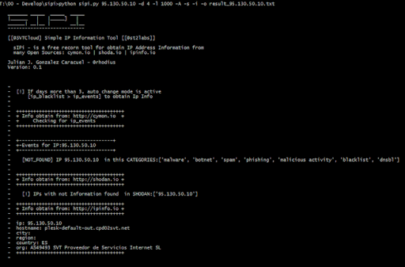

{kind=link}
Presentación
Desde el pasado mes de
Febrero, tengo el placer de trabajar en
@SVTCloud<span
style=“text-align: justify;“> (www.svtcloud.com<span
style=“text-align: justify;“>) como el responsable del servicio y
departamento de Monitorización y Operaciones de Seguridad
(MSOC).
Entre otros, el equipo de Seguridad del MSOC, ofrece los servicios:
- PSaaS - Perimetral Security as a Service, que consiste en la
gestión operativa de dispositivos de seguridad perimetral en modo
servicio.
- Alerta Temprana: realizando una monitorización constante 24x7,
del estado de la seguridad.
- Respuesta ante incidentes: investigación y propuestas de
contramedidas que permitan contener el incidente de seguridad, y
proporcionar las bases de seguridad para prevenir en el futuro.
Por supuesto, la monitorización constante, nos permite detectar nuevos
ataques, alertar y prevenir ataques e investigar con objeto de
establecer líneas de defensa en los dispositivos perimetrales.
Una de las tareas más recurrentes en la detección de un ataque es
conocer si el tráfico sospechoso con origen y/o destino desconocido
(dirección IP) esta incluido relacionado con actividad maliciosa, SPAM,
Malware, etc… fruto de nuestro trabajo diario, he desarrollado
sIPi una herramienta que permite analizar una dirección IP o lista
de direcciones IP, para obtener información relevante con respecto a:
- Nivel de reputación / actividad asociada a dicha IP: es decir,
analizar si la IP esta involucrada en SPAM, actividad Malware y/o
pertenece a una red Botnet. Utilizando el servicio ofrecido por
- Nivel de exposición: analizar la IP y conocer cuál es su nivel de
exposición en Internet, a través del buscador http://shodan.io
- Información básica de geolocalización: analizar la información de
la IP, obteniendo información simple de la misma, a través de
**sIPi - Simple IP Information
Tools**
La herramienta integra en una sola consulta la información que se
obtendría por separado, consultando en cada una de las fuentes de
información.
En breve publicaré la herramienta en mi GitHub
(https://github.com/st2labs) estad atentos !!!
Os dejo una captura:
|  |
| [@St2labs | @Svtcloud] - sIPi Tools output |
{kind=link}
Pronto en mi https://github.com/st2labs
#ST2Labs
#SVTCloud
www.st2labs.com / www.svtcloud.com